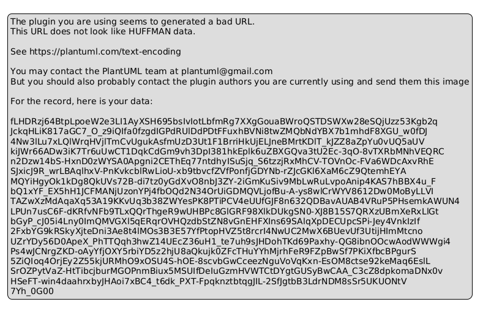
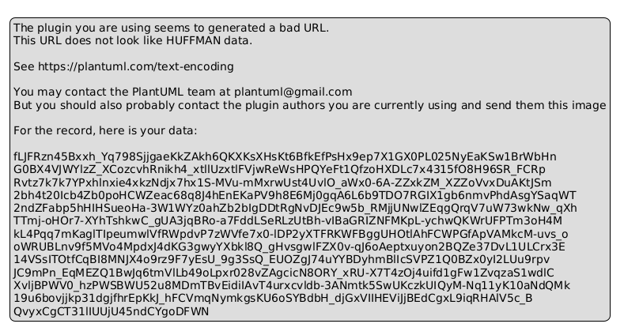
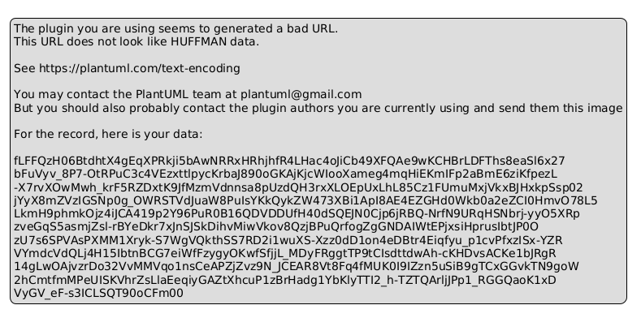
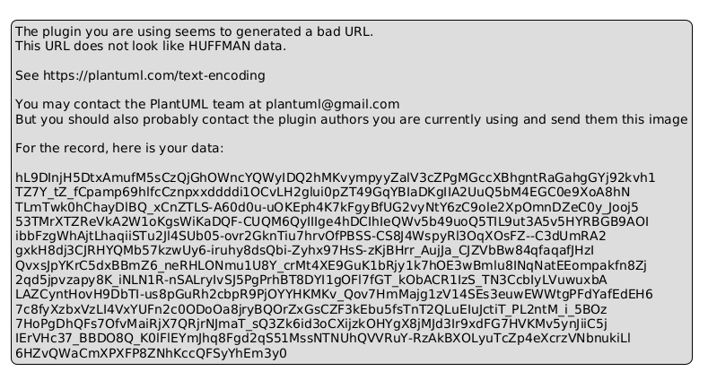
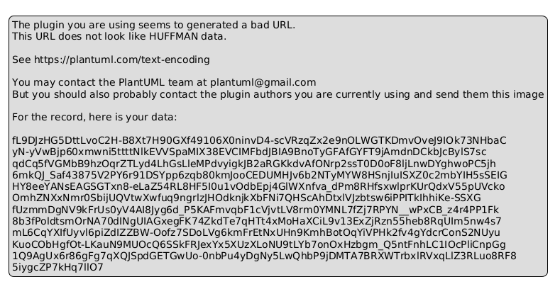

Hệ thống thương mại điện tử VAMOS STORE là website bán lẻ chuyên biệt về giày sneaker, giày thể thao và sandal hiện đại. Trong Lab 1, phạm vi bài toán được chuẩn hóa thành 3 tác nhân chính (Primary Actors) và 1 tác nhân phụ (Secondary Actor) theo đúng thực hành phân tích nghiệp vụ chuẩn mực:
PENDING).Sơ đồ Use Case tổng quát dưới đây phân định ranh giới hệ thống rõ ràng, bao gồm toàn bộ 14 Use Cases được sắp xếp thành 4 phân hệ chính, liên kết với 3 tác nhân mà không xảy ra tình trạng cắt chéo đường nối.

| Mã UC | Tên Use Case | Tác nhân (Actor) | Phân hệ | Mô tả tóm tắt | Ưu tiên |
|---|---|---|---|---|---|
| UC-01 | Đăng ký tài khoản | Guest | Tài khoản | Tạo tài khoản mới, email độc nhất, băm bcrypt | High |
| UC-02 | Đăng nhập | Guest, Customer, Admin | Tài khoản | Xác thực thông tin, cấp Session bảo mật | High |
| UC-03 | Khôi phục mật khẩu | Guest (phụ: Email Svc) | Tài khoản | Gửi token bảo mật qua email đặt lại mật khẩu | Med |
| UC-04 | Quản lý hồ sơ & địa chỉ | Customer | Tài khoản | Cập nhật hồ sơ cá nhân và sổ địa chỉ nhận hàng | High |
| UC-05 | Tìm kiếm & xem sản phẩm | Guest, Customer | Mua sắm | Lọc đa tiêu chí (size, màu, giá) và xem chi tiết giày | High |
| UC-06 | Quản lý giỏ hàng | Customer, Guest | Mua sắm | Thêm biến thể giày, chỉnh số lượng 1-10 đôi | High |
| UC-07 | Đặt hàng COD | Customer | Mua sắm | Chọn địa chỉ, áp voucher, chốt đơn trong Transaction | High |
| UC-08 | Tra cứu & theo dõi đơn | Customer | Đơn hàng cá nhân | Xem dòng thời gian đơn hàng và snapshot sản phẩm | High |
| UC-09 | Hủy đơn hàng | Customer | Đơn hàng cá nhân | Khách hủy đơn khi ở PENDING, tự động hoàn kho | High |
| UC-10 | Xử lý & cập nhật đơn hàng | Admin | Quản trị | Chuyển 5 bước trạng thái đơn, hủy đơn nội bộ | High |
| UC-11 | Quản lý tồn kho | Admin | Quản trị | Theo dõi tồn kho theo SKU, cảnh báo, điều chỉnh kho | High |
| UC-12 | Quản lý sản phẩm & danh mục | Admin | Quản trị | Quản lý danh mục, biến thể Size/Color/SKU và ảnh | High |
| UC-13 | Quản lý mã giảm giá | Admin | Quản trị | Tạo voucher, thiết lập hạn mức và quota 1 lần/khách | Med |
| UC-14 | Xem báo cáo doanh thu | Admin | Quản trị | Thống kê doanh thu thực tế từ đơn COMPLETED | High |
Phân rã chi tiết quy trình đặt hàng thanh toán khi nhận hàng. Áp dụng chuẩn xác quan hệ <<include>> cho các hành vi bắt buộc (chọn địa chỉ, khóa kiểm tra kho, xác nhận COD) và quan hệ <<extend>> cho hành vi áp dụng mã giảm giá tùy chọn:

Khách hàng theo dõi chi tiết từng đơn hàng đã đặt. Quan hệ mở rộng <<extend>> quy định rõ: Nút hủy đơn hàng chỉ xuất hiện và cho phép thực thi khi đơn hàng đang ở trạng thái PENDING.

Quản trị viên tiếp nhận và chuyển tiếp đơn hàng theo máy trạng thái tuần tự. Chức năng Hủy đơn hàng nội bộ là một nhánh <<extend>> khi không thể liên hệ người nhận.

Thể hiện đặc thù ngành giày dép: Quản lý sản phẩm bắt buộc bao gồm (<<include>>) quản lý ma trận biến thể Kích cỡ (Size) x Màu sắc (Color) và thư viện hình ảnh thực tế. Hành động Điều chỉnh tồn kho mở rộng (<<extend>>) khi kiểm kê phát hiện lệch kho thực tế.

Lab 1 đã hoàn thành đầy đủ 100% mục tiêu học thuật môn Phân tích Thiết kế Hệ thống:
<<include>> và <<extend>> đúng chuẩn UML 2.5.